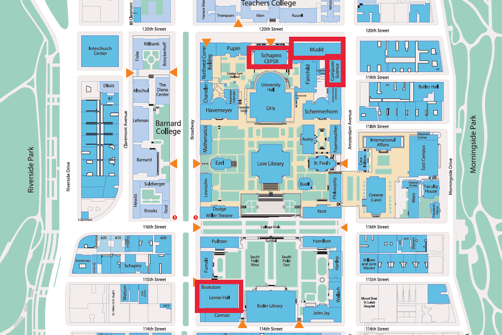
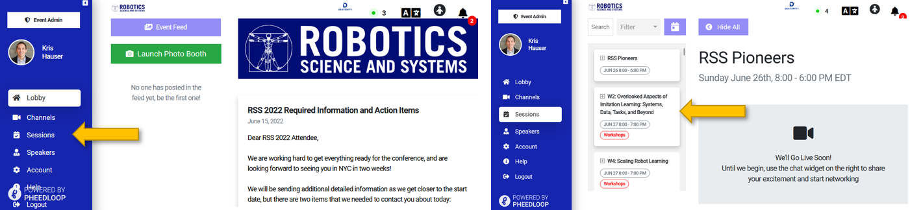
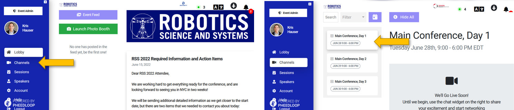
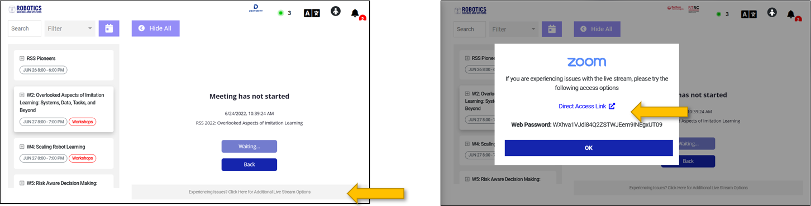
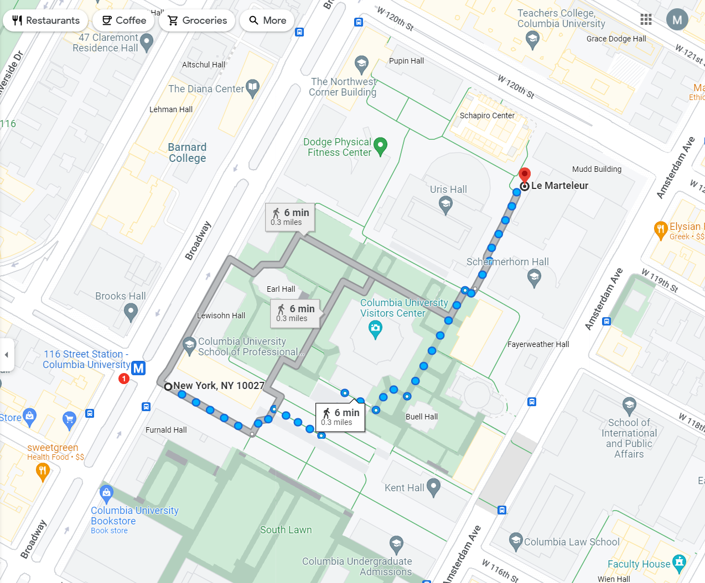
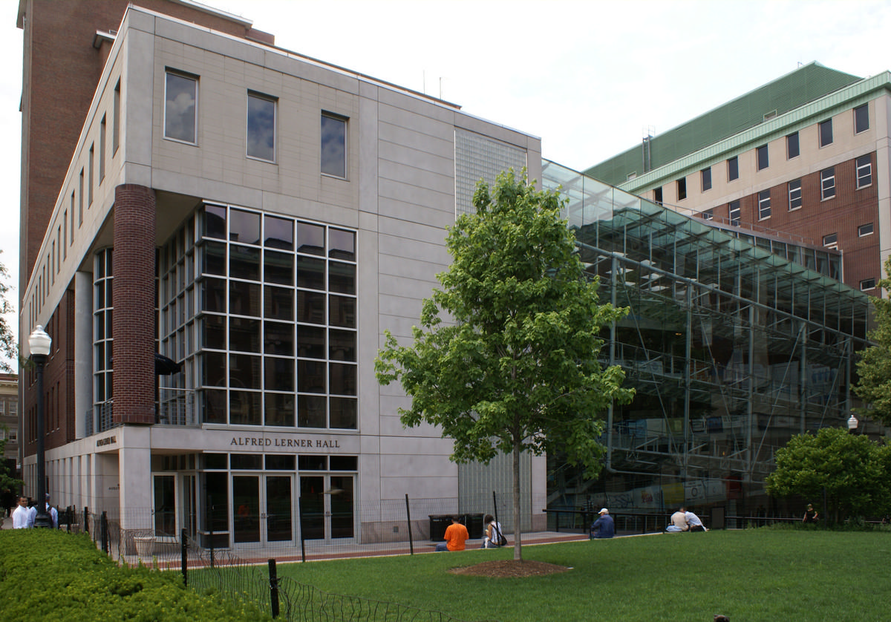

Virtual event site: https://pheedloop.com/RSS2022/virtual/
Attending RSS information site: https://roboticsconference.org/attending
YouTube Live stream
Hours:
Workshops will be held in CEPSR, Mudd, and Computer Science buildings.
The main RSS conference will be held in Lerner Hall.
|  |
The Registration Desk will be in the Broadway lobby of the Roone Arledge Auditorium of Alfred Lerner Hall, located at 2920 Broadway. If you are coming by subway, take the 1 train to 116th Street, and walk two blocks south. The entrance is on the East side of Broadway, which shows a wide set of doors saying “Roone Arledge Auditorium and Cinema”.
Live captioning will be provided on the Zoom webinar only, not the YouTube live stream. The transcript will be provided on YouTube recordings.
Live captions will also be provided on the web at the following links
Tuesday, 6/28
Wednesday, 6/29
Thursday, 6/30
The Virtual Event site is found on Pheedloop at https://pheedloop.com/RSS2022/virtual/. Virtual participants will first need to register to obtain access to the conference through the Pheedloop site.
To join workshops, choose the desired workshop under the “Sessions” tab.
|  |
To join the main conference feed, select the appropriate day under the “Channels” tab.
|  |
You may connect directly to the session stream through the Pheedloop site with the Zoom Web Client, or for better performance you may click on the text “Experiencing Issues? Click Here for Additional Live Stream Options” below the stream frame to join from your Zoom desktop app.
|  |
The Boat Cruise banquet will board at Pier 40. Boarding will start at 6:30pm, and the boat will leave at 7pm. If taking public transportation from the Columbia area, we recommend taking the 1 train to the nearby Houston St. station. Note that transportation time from the Columbia area will be 30-45 minutes, so make sure to allow enough time. You will also need the QR code on the back of your badge to board the boat.
If you are attending Pioneers, you will have to enter through the Welcome Lobby of the Alfred Lerner Hall. You can enter campus through the main entrance at 116th St. & Broadway. If you are coming by subway, take the 1 train to 116th Street. If you are coming by car, ask to be dropped off at “116th & Broadway”. Then find your way to the North-East corner entrance of Lerner Hall as shown here:
|  |
This is the entrance you are looking for:
|  |
The Registration Desk will be in the lobby of the Seeley W. Mudd Engineering Building. You must use the campus entrance to the building. (There are street entrances as well on 120th Street, but they require Columbia ID cards for access.) You can enter campus through the main entrance at 116th St. & Broadway. If you are coming by subway, take the 1 train to 116th Street. If you are coming by car, ask to be dropped off at “116th & Broadway”””. Then find your way to the Mudd building as explained below.
The exact location of the entrance is next to the “Le Marteleur” (“The Hammerer”) statue. Here is the link to the exact location on Google Maps. Once you see it, you’re in the right spot - the Mudd building is right behind the statue. Below are walking directions from the campus entrance to the Mudd building.

|
For local help: flag an RSS volunteer or email Matei Ciocarlie at matei.ciocarlie@columbia.edu.
For urgent issues involving safety: contact the Columbia Public Safety Emergency Line: 1-212-854-5555
For technical assistance with the virtual site: contact Brian Plancher at bplancher@barnard.edu.